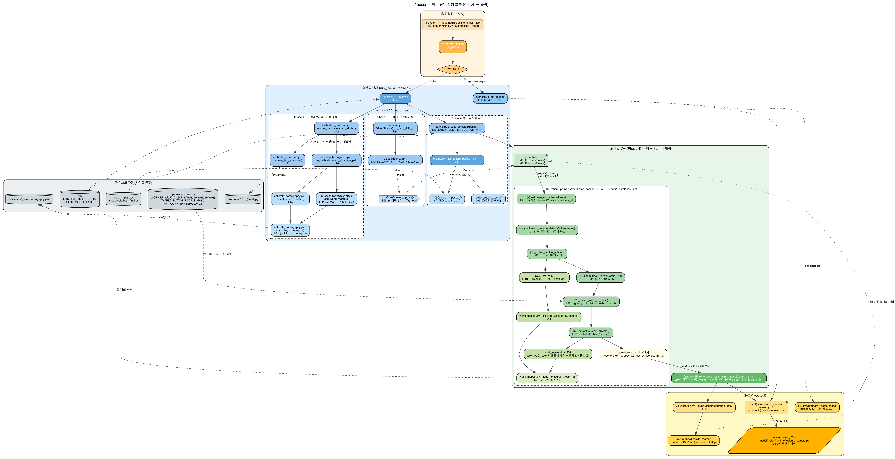
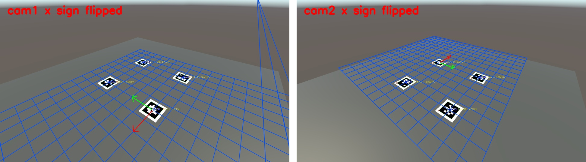
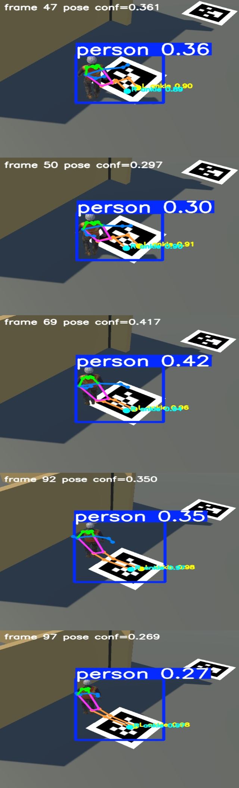

Backend
FastAPI, Python, SQLAlchemy Async, PostgreSQL, REST API, request latency logging
About
실시간 영상 처리 프로젝트를 진행하면서 모델 정확도, 좌표 변환 오차, RTSP 입력, 병렬 처리, DB 저장, 리포트 생성까지 문제가 이어지는 지점을 직접 추적했습니다. 단순히 기능을 붙이는 것보다 병목과 신뢰성 지표를 남기고, 다시 실행 가능한 형태로 정리하는 것을 중요하게 생각합니다.
Tech Stack
단순 나열이 아니라, 각 기술을 어디에 사용했는지 설명할 수 있도록 역할별로 묶었습니다.
FastAPI, Python, SQLAlchemy Async, PostgreSQL, REST API, request latency logging
RTSP, FFmpeg, MediaMTX, OpenCV VideoCapture, frame queue, latest-frame processing
YOLO custom detection, YOLO pose, ArUco marker, homography, BEV coordinate fusion
threading, camera/model parallelism, module-level timing, FPS benchmark matrix, Mac-only profiling
Docker, Docker Compose, MQTT alert, local Ollama report generation, snapshot file serving
React, Vite, dashboard UI, Unity simulation, Git, Markdown documentation
Selected Projects
현재 가장 완성도가 높은 프로젝트는 산업 현장 충돌 예측 시스템이고, 나머지는 같은 코드베이스에서 백엔드 역량을 분리해서 보여줄 수 있는 프로젝트 단위로 정리했습니다.
Unity RTSP 스트림을 서버에서 받아 YOLO, homography, BEV fusion으로 작업자와 지게차의 충돌 위험을 예측한 실시간 AI 백엔드 프로젝트입니다.
충돌 위험 이벤트를 DB에 저장하고, 날짜별 incident log와 snapshot을 조회해 로컬 LLM으로 HTML 안전 리포트를 생성하는 백엔드 기능을 구현했습니다.
FFmpeg와 MediaMTX로 mock RTSP 환경을 구성하고, serial/camera_parallel/model_parallel을 45회 반복 측정해 FPS와 loop latency를 비교했습니다.
현재 rule-based fusion을 baseline으로 고정하고, 추후 worker/forklift/dropzone을 node로, 거리/상대속도/TTC를 edge feature로 저장하는 데이터셋 exporter를 설계 중입니다.
Featured Project Detail
지게차와 작업자가 ㄱ자 또는 T자형 통로에서 서로를 직접 보지 못하는 상황을 가정했습니다. 단순 객체 탐지만으로는 충돌 위험을 설명하기 어렵기 때문에, 두 카메라의 객체 위치를 하나의 절대좌표계로 합성하고 시간 순서에 따라 접근 위험을 계산했습니다.
Unity 카메라 2대를 RTSP로 연결하고, 백엔드가 같은 시점의 프레임을 읽어 분석합니다.
Aruco 기반 homography로 픽셀 좌표를 BEV 절대좌표로 변환합니다.
작업자, 지게차, 진행방향, TTC를 결합해 Warning/Danger를 판단합니다.
FPS, loop latency, 검출률, DB/MQTT 연동 여부를 모듈 단위로 측정했습니다.
System Architecture
핵심은 영상 입력을 안정적으로 만들고, 좌표 변환과 위험 판단을 백엔드에서 반복 가능한 형태로 검증하는 것입니다.
공장형 T자 통로, 벽, 가로등, ArUco 마커, 지게차/작업자 동선 생성
FFmpeg가 녹화 프레임을 송출하고 MediaMTX가 cam1/cam2 RTSP 주소 제공
YOLO pose로 작업자 발 위치 추정, custom YOLO로 지게차/박스 검출
homography로 절대좌표 변환, FH 기준점과 TTC로 위험 점수 계산
Warning/Danger 이벤트를 MQTT, DB, 리포트 생성 흐름으로 연결

Performance Metrics
병목은 두 카메라 pose 추론과 custom YOLO 추론이었습니다. 카메라 단위 병렬화, 모델 단위 병렬화, 입력 크기 조정, pose skip/cache를 단계적으로 적용했습니다.
| 단계 | 적용한 개선 | FPS | 직전 대비 | 1 frame | 처리시간 감소 |
|---|
10.148 FPS / 0.099s per frame
초기 대비 약 3.24배 빠른 처리9.206 FPS / 0.109s per frame
FH 위험 기준점 포함, 초기 대비 약 2.94배 빠름99.98% worker / 98.56% forklift
현재 model_parallel 45회 테스트 평균Reliability
pose 검출 실패, bbox 기준점 오차, 카메라별 좌표 불일치를 반복적으로 검증했고, 지게차의 실제 위험 영역을 더 잘 반영하기 위해 진행방향 1m 앞의 FH 지점을 추가했습니다.

Video Evidence
각 영상은 좌측에 두 카메라 검출 결과, 우측에 절대좌표 BEV와 Warning/Danger 판단을 함께 표시합니다.
기본 사각지대 교차 상황. FH 기준 적용 후 Danger가 7.667초 지점에서 발생.
작업자와 지게차의 시작 위치를 바꿔도 동일한 BEV fusion 로직으로 위험 판단.
작업자 방향이 바뀐 케이스. Danger가 7.167초 지점까지 앞당겨짐.

Backend Focus
이 프로젝트의 핵심은 모델을 한 번 호출하는 것이 아니라, 영상 입력부터 위험 로그까지 지속적으로 흐르는 서버 파이프라인을 만드는 것입니다. RTSP 브릿지, 병렬 추론, 모듈별 성능 측정, DB 저장, MQTT 알림, 리포트 생성까지 하나의 백엔드 흐름으로 연결했습니다.
Next Step
현재는 rule-based fusion이 baseline입니다. 이 baseline을 버리지 않고, 프레임별 객체 관계 데이터를 저장한 뒤 GNN과 비교할 수 있게 만드는 것이 다음 고도화 방향입니다.
BEV/world 좌표 기반으로 worker/forklift ID를 시간축에서 안정적으로 유지합니다.
frame별 node, velocity, distance, TTC, Warning/Danger label을 저장합니다.
rule-based fusion의 lead time, false warning, missed danger를 고정 지표로 만듭니다.
worker/forklift/dropzone을 node로 만들고 edge_attr 기반 위험 예측 모델과 비교합니다.